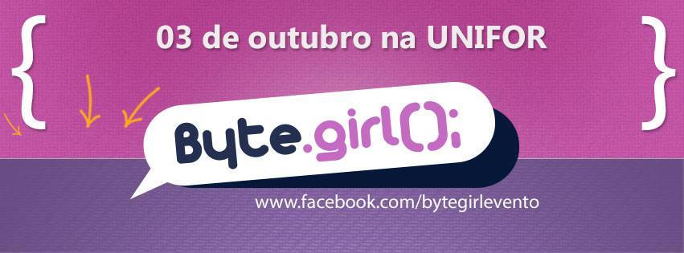

Byte Girl, evento por Fortaleza

Olá, pessoal! Então, esses dias estava buscando algumas dicas de eventos da área de TI para postar aqui no Blog, principalmente aqui pelo NE. Achei um evento super fofo que está em sua primeira e poética edição, o Byte.Girl, que tem como público alvo a comunidade tecnológica da cidade de Fortaleza.
Sua ideia principal é apresentar através de palestras, realizações de mulheres na área de TI – Tecnologia da Informação. De acordo com as organizadoras do evento, a ideia do Byte.Girl<> surgiu após perceberem os dados alarmantes na relação mulheres/mercado de TI, os quais sempre alertamos aqui pelo Poesia.
| paint as comment
#Byte Girl
| paint as string with def as tag byte as code . and ( and ) and girl as normal
def byte.girl(motivar)
| paint as string with end as tag #{motivar} as class
"O Byte girl busca #{motivar}
mulheres
para seguirem
na área de TI
mostrando a realização
das que já estão"
end
| paint as comment
#[S.R.]
#Poesia Compilada
#Byte Girl
Com isso, o evento que irá acontecer em 3 de Outubro de 2015, das 8h às 18h, na UNIFOR, em Fortaleza-CE, abre inscrições neste link hoje, 14, e contará com a presença das já confirmadas palestrantes : Ana Lacerda, Odecilia Barreira, Adriane Fernandes e Bárbara Brandão. Além de palestras o evento terá mesa redonda, workshop, exposições e outros momentos legais.
Outra coisa massa que descobri é quem nesse período que antecede o evento quem quiser concorrer a prêmios como canecas, camisas e outros lindos brindes pode acessar a página do evento no face e seguir os passos. (Eu já seguir e estou concorrendo, risos. ) Ah! O preço das inscrições é baratinho, R$ 20,00 a inteira e R$ 10,00 a meia.
Beijos e até a próxima poesia.
[S.R.]